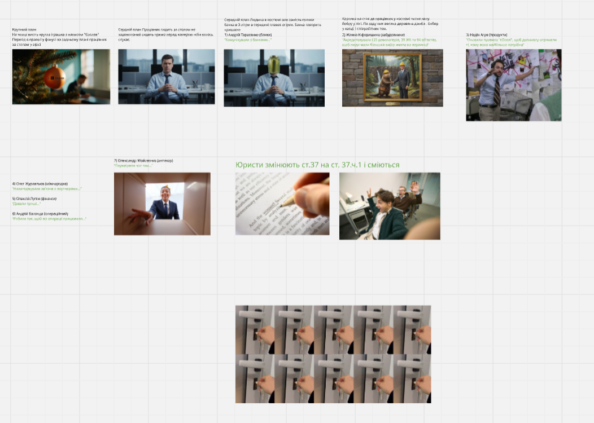

2025 / Cinematic Commercial
eOselya — New Year Campaign
Direction, cinematography, editing, VFX and warm holiday storytelling.
DIRECTOR • VFX SUPERVISOR • CG ARTIST
Ukrainian director and CG artist focused on cinematic commercials, animated worlds, VFX supervision and immersive visual experiences.
VIEW SELECTED WORKSPORTFOLIO
Direction, cinematography, editing, VFX and warm holiday storytelling.

Full-cycle anamorphic video for a large-scale corner LED screen in Kyiv.

Military drone CGI presentation based on technical references and drawings.

Diploma animated film: directing, screenwriting, worldbuilding, mocap and CGI.
ABOUT
I’m Vlad Gryban — a Ukrainian director, VFX supervisor and CG artist based in Kyiv (GMT+3).
I specialize in cinematic storytelling, CGI production, motion design and immersive visual experiences. My background combines directing, editing, VFX, animation and commercial production pipelines.
Experienced in both independent and collaborative productions, I focus on creating atmospheric visuals, strong cinematic language and emotionally engaging worlds across commercials, animated films and experimental digital projects.
I studied Film and Television Directing at Kyiv University of Culture. My diploma project, “Flower of Mind”, is a sci-fi animated film developed through screenwriting, visual language, motion capture, CGI and AI-assisted workflows.
Bachelor’s Degree in Film & Television Directing
Kyiv University of Culture
Autodesk Certification in Architectural Visualization using 3ds Max
CONTACT
Open for cinematic commercials, CGI production, VFX supervision and experimental visual storytelling.